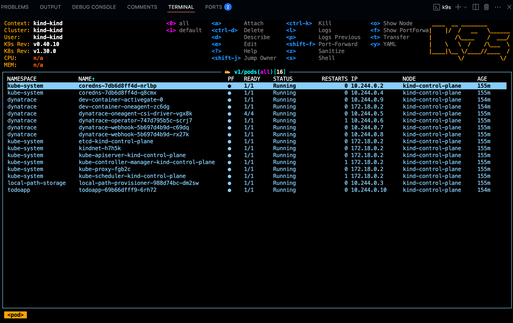

3. Codespaces

TODO: Sizing & secrets you need
1.1 Codespaces configuration#
Branch, Machine sizing & secrets
- Branch
- select the main branch
- Machine sizing
- As a machine type select 2-core
- Secrets (enter your credentials within the following variables)
- DT_TENANT
- DT_OPERATOR_TOKEN
- DT_INGEST_TOKEN
2. While the Codespace is set-up for you, learn powerful usecases with Dynatrace#
We know your time is very valuable. This codespace takes around 6 minutes to be fully operational. A local Kubernetes (kind) cluster monitored by Dynatrace will be configured and in it a sample application, the TODO app will be deployed. To make your experience best, we are also installing and configuring tools like:
k9s kubectl helm node jq python3 gh

3. Explore what has been deployed#
Your Codespace has now deployed the following resources:
-
A local Kubernetes (kind) cluster monitored by Dynatrace, with some pre-deployed apps that will be used later in the demo.
-
After a couple of minutes, you'll see this screen in your codespaces terminal. It contains the links to the local expose labguide and the UI of the application which we will be doing our Hands-On training.

4. Tips & Tricks#
We want to boost your learning and try to make your DEV experience as smooth as possible with Dynatrace trainings. Your Codespaces have a couple of convenience features added.
Show the greeting#
In the terminal, there are functions loaded for your convenience. By creating a new Terminal the Greeting will be shown that includes the links to the exposed apps, the Github pages, the Github Repository, the Dynatrace Tenant that is bound to this devcontainer and some of the tools installed.
You can create a new Terminal directly in VSCode, type zsh or call the function printGreeting and that will print the greeting with the most relevant information.
Navigating in your local Kubernetes#
The client kubectl and k9sare configured so you can navigate in your local Kubernetes like butter.

Exposing the apps to the public#
The apps MKdocs and TODO app are being exposed in the devcontainer to your localhost. If you want to make the endpoints public accesible, just go to the ports section in VsCode, right click on them and change the visibility to public.
5. Troubleshooting#
Exposing the App#
The todoApp is already exposed via NodePort in the port 30100, if you want to expose it in another port like the one defined 8080 in the service, then type and to expose the TODO app, type exposeTodoApp,
exposeTodoApp(){
printInfo "Exposing Todo App in your dev.container"
nohup kubectl port-forward service/todoapp 8080:8080 -n todoapp --address="0.0.0.0" > /tmp/kubectl-port-forward.log 2>&1 &
}
Showing open ports in the container#
There is a helper function loaded in the shell to see the open ports in the dev.container.
showOpenPorts(){
sudo netstat -tulnp
}